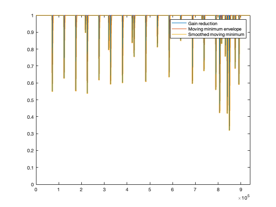
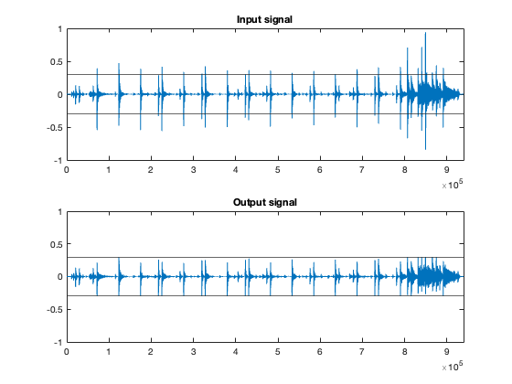
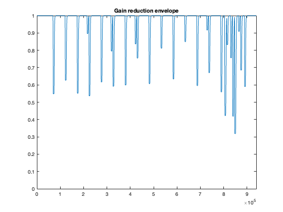

limiter.m
Zachary Miller 16 April 2024
clear; clc; close all; Fs = 48000; Ts = 1/Fs; [x,Fs] = audioread('stereoDrums.wav'); x = 0.5 * (x(:,1) + x(:,2)); N = length(x); threshold = 0.3; attackMs = 20; attackSamples = attackMs*0.001*Fs; releaseMs = 20; releaseSamples = releaseMs*0.001*Fs; releaseSlew = 1/(releaseSamples + 1); % approximation % releaseSlew = 1 - exp(-1/releaseSamples); holdMs = 75; holdSamples = (holdMs*0.001)*Fs; y = zeros(N,1); gain = y; relEnvelope = y; for n=1:N sample = x(n,1); % Hard clip module if (abs(sample) > threshold) gain(n,1) = threshold/abs(sample); else gain(n,1) = 1; end end % Moving minimum (entire signal) M = movmin(gain,attackSamples+holdSamples); % Release module output = 1; for n=1:N output = output + ((M(n,1) - output) * releaseSlew); output = min(output, M(n,1)); relEnvelope(n,1) = output; end % FIR filter envelope smoothing order = 1; if (mod(attackSamples,2) == 0) attackSamples = attackSamples - 1; end smoothEnv = sgolayfilt(relEnvelope,order,attackSamples); % Savitzky-Golay filter % Combine parallel paths out = x .* smoothEnv; figure(1); plot(gain); axis([0 N 0 1]); hold on; plot(M); plot(smoothEnv); hold off; legend('Gain reduction', 'Moving minimum envelope', 'Smoothed moving minimum'); figure(2); subplot(2,1,1); plot(x); title('Input signal'); yline(threshold); yline(-threshold); axis([0 N -1 1]); subplot(2,1,2); plot(out); title('Output signal'); yline(threshold); yline(-threshold); axis([0 N -1 1]); figure(3) plot(smoothEnv); axis([0 N 0 1]); title('Gain reduction envelope');  